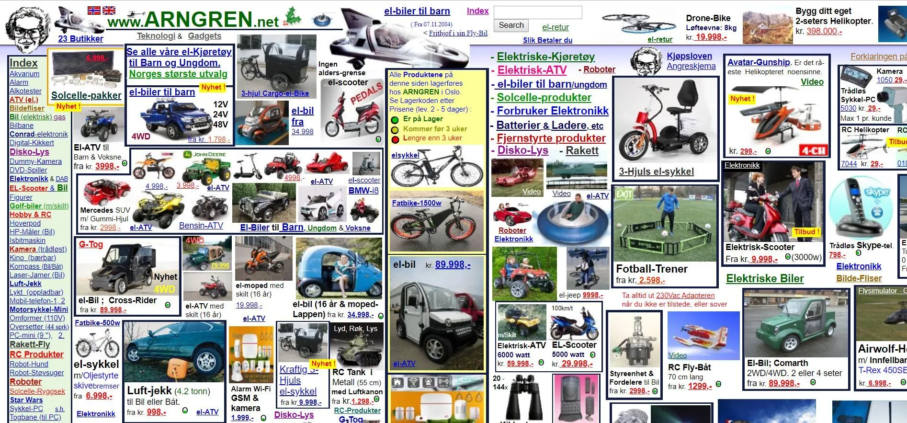

arngren.net
Quick critique: the ugliest UI I could find
Below: the screenshot named
uglys.png
stored under the
assets/
folder.

What I would do to improve this UI
Establish visual hierarchy
— clear typography & spacing.
Whitespace & layout
— use a grid instead of clutter.
Accessible colors
— fix contrast problems.
Consistent controls
— standardized buttons/UI.
Performance
— compress images + mobile responsive.
Iteration
— user feedback + continuous refinement.